.Education is what remains after one has forgotten what one has learned in school التعليم هو ما يتبقى بعد أن ينسى المرء ما تعلمه في المدرسة.
-البيرت اينشتاين
أنتجت مصر العديد من المعجزات والأشخاص الرائعين الذين أثروا في العالم وغيروه إلى الأبد. أشخاص مثل مجدي يعقوب وعلي مصطفى مشرفة وسميرة موسى وأحمد زويل قد غيروا العالم كما نعرفه ، هؤلاء الأشخاص قد كرموا اسم مصر حقًا.
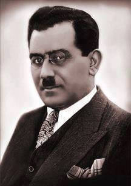
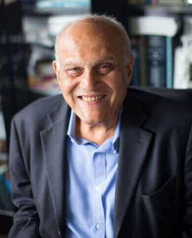
من سكاننا الحاليين البالغ عددهم 100 مليون نسمة هناك ألف شخص لديهم القدرة ان يصبحوا مثل سميرة موسى وألف
مثل أحمد زويل وأكثر من ذلك بكثير ، هناك إمكانية أن نكون أعظم ، وأن نحقق الاكتشافات التي تشكل مستقبل عالمنا و ان ندفع الحضارة الإنسانية إلى مستقبل مذهل
ومن أجل هذا المستقبل ، فإن تعليم الأطفال وتحويلهم إلى بالغين حكماء ومسؤولين وعمال مهرة ومبتكرين هو السبيل الوحيد
“Live as if you were to die tomorrow. Learn as if you were to live forever.” "عش كأنك ستموت غدا. تعلم كأنك تعيش للابد."
- مهاتما غاندي
التحديات
ارتفاع الكثافة الطلابية بالفصول
ضعف المناهج
الحاجة لتطوير قدرات المعلمين لتتناسب مع التطورات التقنية في العلوم.
زيادة اعتماد الطلاب على الدروس الخصوصية
ضعف المهارات الحياتية عند الطلاب و قلة نموهم الشخصي
ضعف الشغف للعلم و الاستمتاع بالمدرسة عند الطلاب
Education is the passport to the future, for tomorrow belongs to those who prepare for it today. التعليم هو جواز السفر إلى المستقبل ، فالغد لمن يستعد له اليوم.
-مالكوم x
المعلمين
أول جزء من اللغز هو الاهتمام بالمعلمين:
الزيادة في الأجور والاحترام المجتمعي
يحتاج المعلمون إلى المزيد من التقدير في المجتمع ، ويجب منح المعلمين أجورًا عالية حسب مهارتهم ، وبهذه الطريقة يمكننا تحفيز الناس ليكونوا معلمين وجعل المعلمين العاملين بالفعل يهتمون أكثر بعملهم
الثواب والعقاب
يجب مكافأة المعلمين المهرة والعمل الدؤوب ، بينما يحتاج المعلمون غير المسؤولين وغير الموثوق بهم إلى معاقبة / استبدال ، مما سيساعدنا على التخلص من المعلمين السيئين وسيحفز المعلمين الجيدين ليكونوا أفضل
أعادة تركيز انتباهنا الي ما يهم حقًا
يجب تقييم المعلمين بناءً على جودة التدريس ، ومدى قدرتهم على استعمال الموارد المتاحة والابتكار ، ومدى جودة أداء طلابهم ، مما يجبر المعلمين على إعادة تركيز انتباههم على مساعدة الطلاب قدر الإمكان
تدريب أفضل وتحديثات مستمرة
يحتاج المعلمون إلى التدريب حتى يتمكنوا من التعامل مع الفصول ، ويكونوا قادرين على استخدام الموارد المتاحة وقادرون على مساعدة الطلاب في دراساتهم وكأفراد في حياتهم الشخصية ، ونحن بحاجة إلى إبقاء المعلمين على اطلاع دائم بطرق التدريس الجديدة والتقنيات الجديدة لمساعدتهم للعمل بكفاءة
الجودة و الكمية
يجب تعيين المزيد من المعلمين لسد الثغرات ، لكن لا يمكننا فقط توظيف أي شخص ، فنحن بحاجة إلى إيجاد طرق لاختيار الأشخاص المناسبين وتدريب مدرسين جدد بطرق أفضل وأكثر كفاءة وأرخص.
الاستفادة من طرق الاتصال الجديدة
نحتاج إلى المزيد من أشكال الاتصال المباشرة والتي يمكن الوصول إليها بسهولة بين المعلم والحكومة ، وتعتبر مجموعات whatsapp واحدة من أبسط الطرق وأكثرها فاعلية ( الفيديو أدناه يوضح المزيد حول هذه الطريقة)
الغرب ليسوا اذكي منا ولكنهم يقفون و يدعمون الفاشل حتي ينجع
-احمد زويل
هنا تتكلم "سيما بانسل" عن محاولتها في تحسين التعليم في محافظة فقيرة بالهند و عن حلولها لمشاكل التعليم دون مال اكثر
و يتحدث هنا "كن روبينسون" عن مشاكل التعليم بالولايات المتحدة الامريكية و ان بالرغم من وجود ميزانية كافية الا ان مشكلة التعليم تكمن في النظام التعليمي غير المرن حيث انه يخاطب الطلبة علي انهم شخص واحد ولا يراعي الاختلافات بينهم
المرء دائما حيث يضع نفسه
-احمد زويل
النظام التعليمي
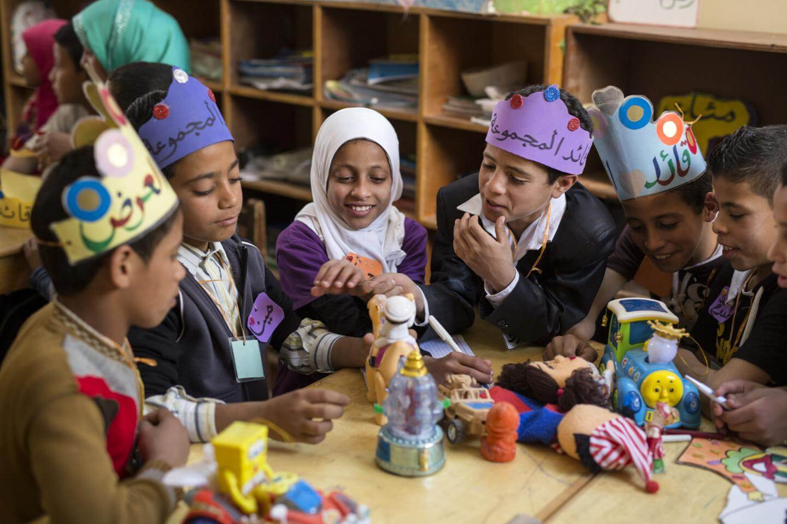
أقل نظرية وأكثر عملية
يجب إعادة ربط الكلية والمدرسة والوظائف ، حيث يمكن للأطفال البدء في تعلم المهارات اللازمة في حياتهم المهنية التي يختارونها في المدرسة ثم تطويرها في الجامعة
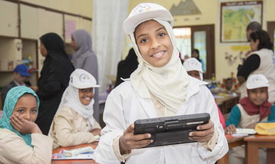
متخصص اكثر
يحتاج الأطفال إلى مواد مصممة وفقًا لاهتماماتهم والوظائف التي يختارونها ، مما يساعدهم على تطوير مهارات أفضل لمهنهم و يجعل المدرسة ممتعة و شيقة.
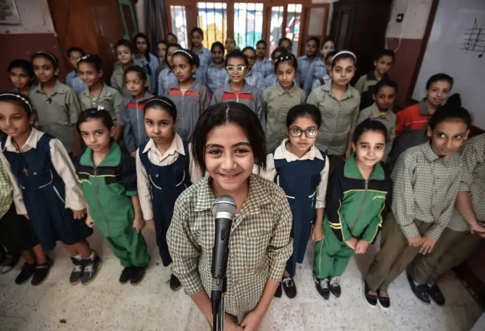
سهولة التنقل بين التخصصات
يجب أن يكون الأطفال قادرين على تغيير تخصصهم بسهولة حتى يتمكنوا من تجربة عدة تخصصات حتى يجدوا شغفهم ، وبهذه الطريقة يمكننا الحصول على قوة عاملة تستمتع حقًا بعملها
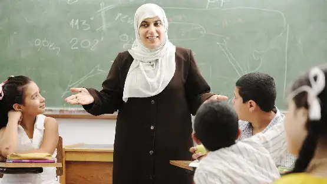
الاهتمام باللغات بالطريقة الصحيحة
علينا ان نهتم بتعليم المهارات الاساسية في اللغات مثل التحدث و الانصات، وعلينا وضع الامتحانات مع الاخذ بذلك في الاعتبار
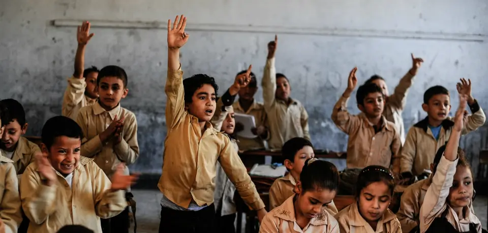
حفظ اقل، تطبيق اكثر
علينا استخدام اختبارات أقل تركز على الحفظ والبدء في استخدام المزيد من الأساليب التي تركز على التطبيق مثل إنشاء المشاريع ، وهذا يقلل من الغش ، ويجعل المدرسة أكثر متعة ويسمح للأطفال بإبراز إبداعهم
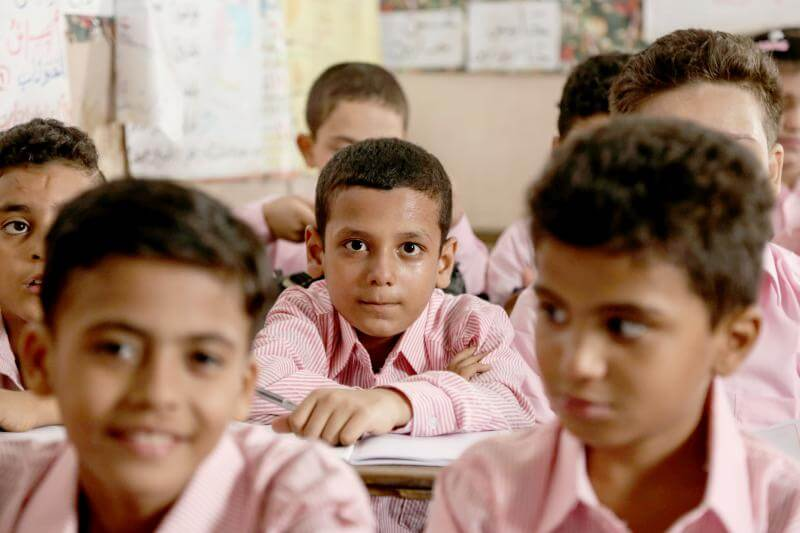
التعامل بطريقة صحيحة مع الطلاب
يجب أن تكون هناك طرق للتعامل مع الطلاب المتمردين و مساعدتهم حتي يصبحوا طلاب جيدين، و لذلك علينا تدريب و تفعيل دور الاخصائي النفسي لان التمرد يكون سببه الضغوطات
“Education is the most powerful weapon which you can use to change the world.” "التعليم هو أقوى سلاح يمكنك استخدامه لتغيير العالم."
-نيلسون مانديلا
البيئة التعليمية
المدارس جزء من مجتمعنا
علينا ان نجعل المدرسة بيئة صالحة للنعليم الجيد لتطوير الطلبه قي حياتهم، فالناس تعامل المدارس علي انها مكان نقضي فيه فترة من حياتنا فقط، ولكن علينا ان نراها كمشروع جماعي من كل افراد المجتمع، فاذا وجد الناس ان الفصول مزدحمة يمكن بجانب الانفاق الحكومي التوجه بالمشاركة من المجتمع المدني (من مال الي مواد البناء الي ادوات) لزيادة عدد الفصول بالمدارس الموجودة حاليا مع تصميم معماري جديد
حل مشكلة الدروس الخصوصية
طريقة لحل مشكلة الدروس الخصوصية هو تحسين النظام النعليمي بالمدارس للقضاء علي حاجة الطالب لدروس خصوصية و ان تعامل اماكن الدروس الخصوصية معاملة المدارس الخاصة حتي نضع عليها ضرائب و نستعمل المردود منها في زيادة اجور المعلمين
 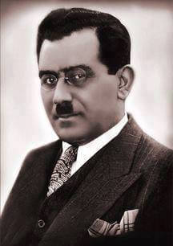
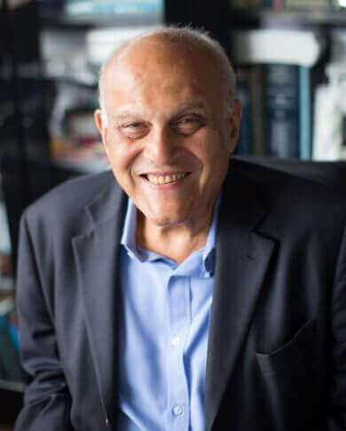
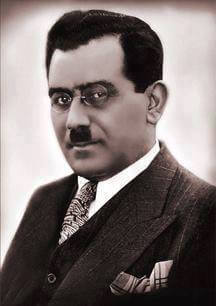
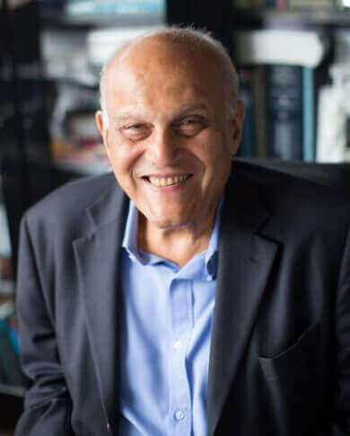